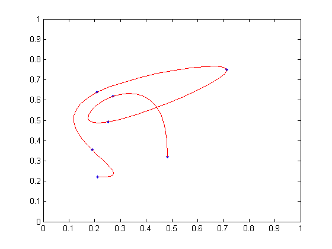

2 次元のスプライン
このデモでは、2 次元の 3 次スプラインでデータの内挿を行います。MATLAB® の関数 SPLINE を使用します。B スプラインと他の任意の次数の区分的多項式に対する関数のすべての集合である Curve Fitting Toolbox™ の関数 spline は使用していません。
ランダムに 8 つの点を抽出します。これをプロットします。
n = 7;
x = rand(n,1);
y = rand(n,1);
plot(x,y,'.')
axis([0 1 0 1])

より細かい間隔でこれらを評価することにより、2 つのスプラインで点を内挿します。赤いラインを使用して内挿した曲線をプロットします。
t = 1:n; ts = 1:1/10:n; xs = spline(t,x,ts); ys = spline(t,y,ts); hold on plot(xs,ys,'r'); hold off